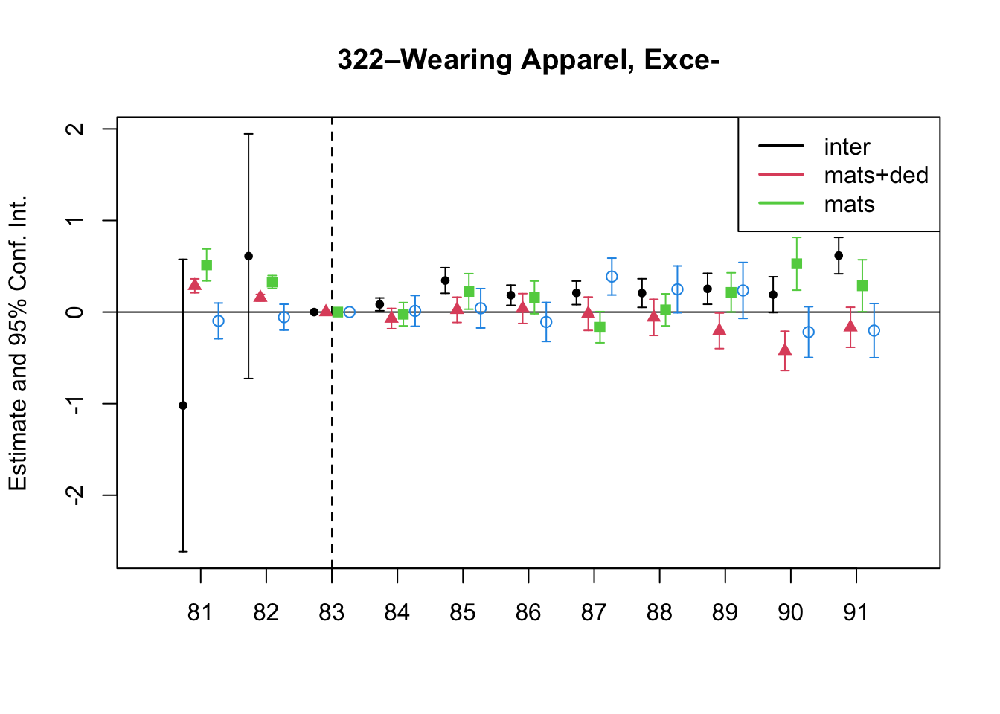
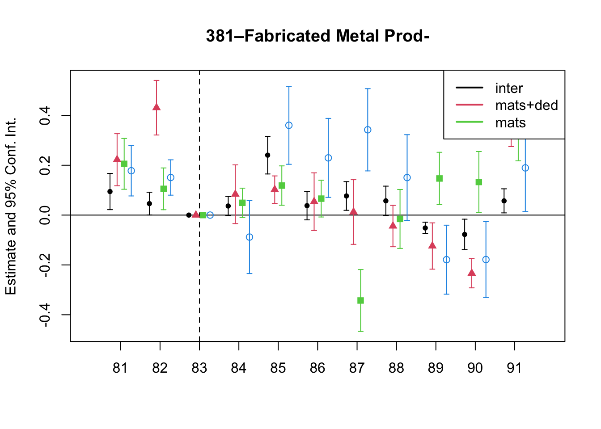
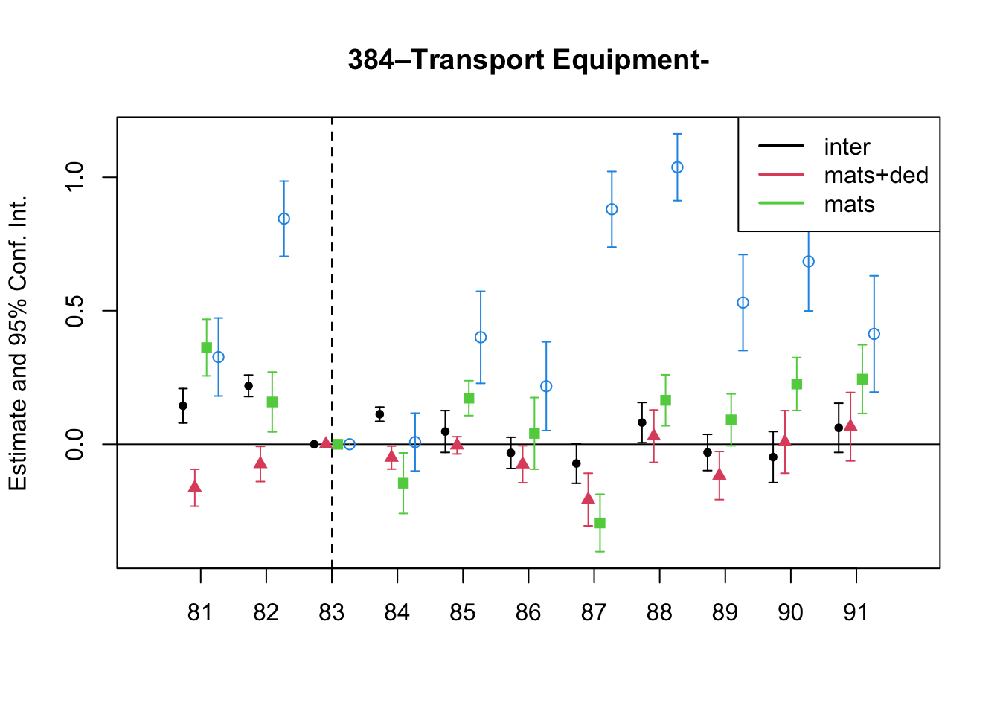
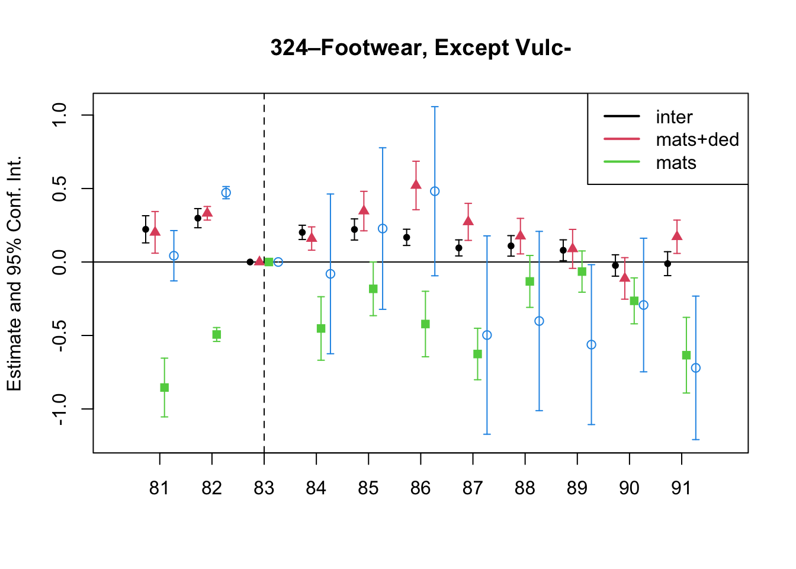
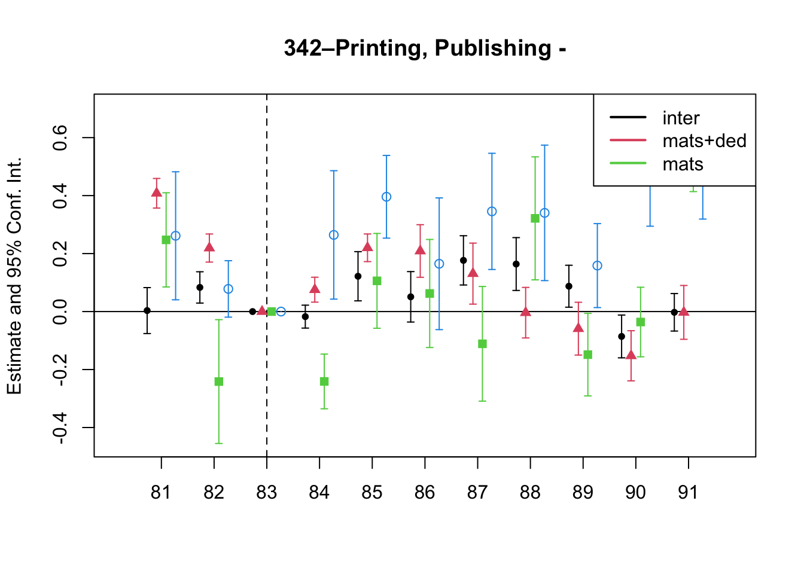
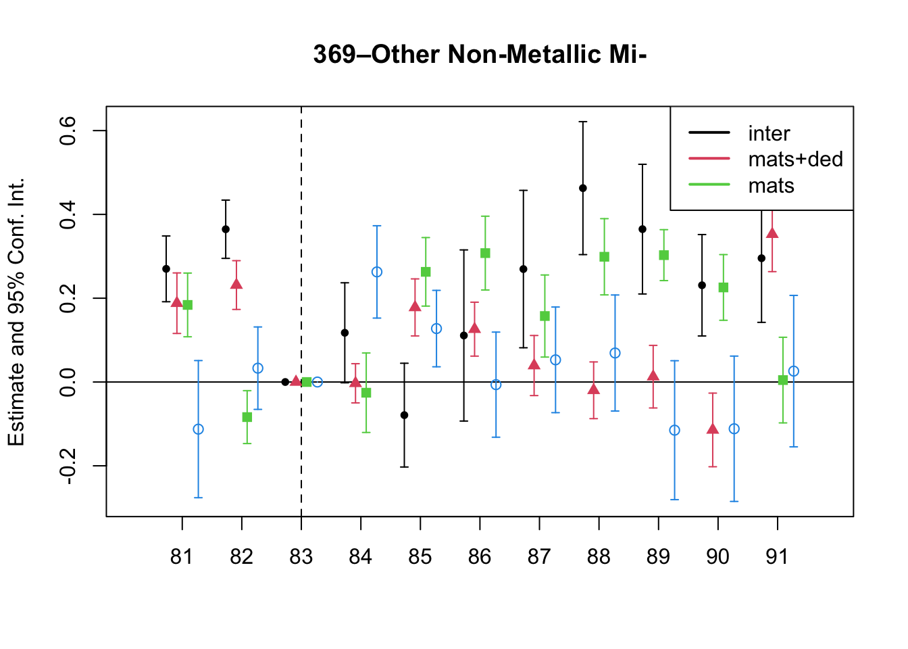
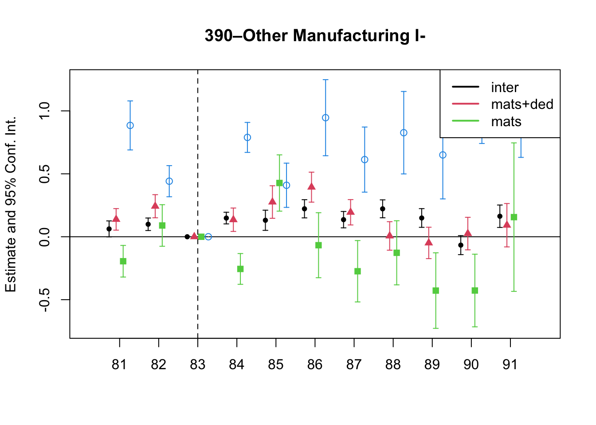
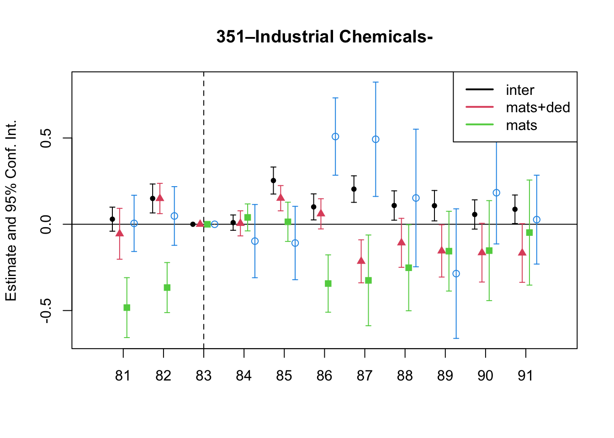
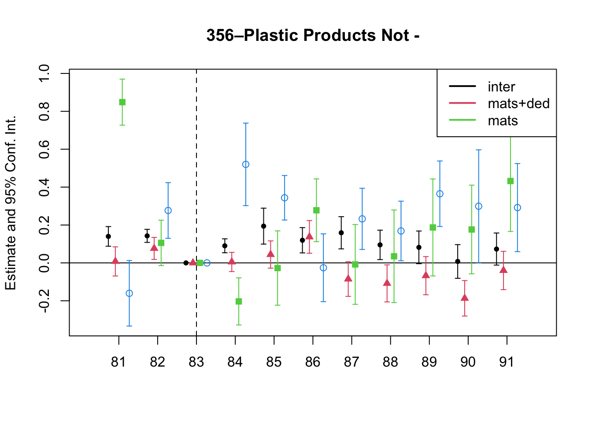

| Reform Year | J.O. Affected | Income Tax Change |
|---|---|---|
| 1983 | Individuals | 8% increase in most scales; Max tax rate was reduced from 56 to 49% |
| 1983 | Ltd. Co. | Reduction from 20 to 18%; Now subject to presumptive income |
| 1986 | Individuals | Max tax rate applied was reduced from 49 to 30% |
| 1986 | Ltd. Co. | Increased from 18 to 30% |
| 1986 | Corporations | Decreased from 40 to 30% |
Tax Evasion and Productivity
Abstract
Corporate tax evasion through cost overreporting spreads internationally causing governments significant tax revenue losses. Detecting and measuring the magnitude of tax evasion remains a challenge, even for the few studies on overreporting where researchers can exploit administrative data. Moreover, if this evasion strategy accounts for economic losses as large as reported, then cost overreporting might bias estimates of production functions, especially productivity. This paper addresses both issues. I first provide a novel strategy to estimate cost overreporting using commonly available firm-level data. I then formally show that ignoring cost overreporting leads to downward biased productivity estimates. Finally, I demonstrate how to recover productivity in the presence of tax evasion.
Keywords
Tax Evasion, Cost Overreporting, Production Function Estimation, Productivity
Updates
- Diff in diff
- Relative prices
- Pre-trends
- Deconvolution implementation strategy
- GNR implementation in Fortran
To Do
- Deconvolution implementation
- CD GNR in Fortran
- Implement deconvolution
- Ecuador dataset
1 A parsimonious model of tax evasion through input overreporting
Price-taking firms maximize expected after-tax profits. Firms choose the flexible input \(M_{it}\) to produce output \(Y_{it}\) given output and input prices \(\{P_{t}, \rho_t\}\), a common technology, the production function (Equation 1), and their productivity \(\omega_{it}\).
\[ Y_{it}=G(M_{it})\exp(\omega_{it}+\varepsilon_{it}) \tag{1}\]
As standard in the literature, productivity \(\omega_{it}\) is known to firms when they make input decisions. This is the well-known endogeneity problem of simultaneity. On the other hand, firms face output shocks. The output shock \(\varepsilon_{it}\) is not part of the firms’ information set.
The model departs from the literature by allowing firms to overreport their inputs \(e_{it}\) to reduce their tax burden and optimize after-tax profits. Firms, then, consider in their optimization problem the profit tax \(\tau\), the evasion penalty/cost \(\kappa(e)\), and the probability of detection \(q(e_{it}|\theta_{it})\).
Firms solve Equation 2 \[ \begin{aligned} \max_{M_{it}, e_{it}\in [0,\infty)} [1-q(e_{it}|\theta_{it})]&\left[(P_t\mathbb{E}[Y_{it}]-\rho_{t} M_{it})-\tau\left(P_t\mathbb{E}[Y_{it}]-\rho_{t} (M_{it}+e_{it})\right)\right]\\ +q(e_{it}|\theta_{it})&\left[(1-\tau)(P_t\mathbb{E}[Y_{it}]-\rho_{t} M_{it})-\kappa(e)\right] \\ \text{s.t. }\; Y_{it}=G(M_{it})&\exp(\omega_{it}+\varepsilon_{it}) \end{aligned} \tag{2}\]
The probability of detection \(q(e_{it}|\theta_{it})\) is monotonically increasing in the amount evaded \(e_{it}\), conditional on the type of the firm \(\theta_{it}\). Intuitively, for a given type, firms that evade more are more likely to get caught.
The type of the firm \(\theta_{it}\) might be discrete, like the type of juridical organization, or continuous, like the level of revenue1. Some types might be more likely to be detected if the firm engages in tax evasion. For example, in contrast to other types of juridical organizations in Colombia, corporations are closely supervised and are required to have an auditor. That is, for a given level of tax evasion \(e_0\) and two different types \(\theta' \not= \theta \in \mathbfcal{\Theta}\), then \(q(e_0|\theta')\ge q(e_0|\theta)\).
If the type \(\theta\) is continuous, it might be a function of inputs; for example, level of revenue. Firms will then affect their probability of detection \(q(e|\theta)\) in two ways: directly, by choosing how much they evade \(e\); and indirectly, when choosing inputs \(M\).
The optimal decision of the firm will depend on the fiscal environment \(\Gamma=\{\tau, \kappa, q \}\), namely the tax rates, the penalty/cost of detection, and the probability of detection.
The firms’ problem (Equation 2) can be rewritten as follows, \[ \begin{aligned} \max_{M_{it},e_{it}} \mathbb{E}[\pi_{it}|\Gamma] = &(1-\tau)\left(\mathbb{E}[Y_{it}]-\frac{\rho_{t}}{P_t} M_{it}\right)+[1-q(e_{it}|\theta_{it})]\left(\frac{\rho_{t}}{P_t}e_{it}\tau\right) -q(e_{it}|\theta_{it})\kappa(e_{it}) \\ &\text{s.t. }\; Y_{it}=G(M_{it})\exp(\omega_{it}+\varepsilon_{it}) \end{aligned} \tag{3}\]
Intuitively, if the firm overreports her inputs’ cost, she will get the share of the value she overreported with probability \((1-q)\) and she will be penalized with probability \(q\).
Assuming well-behaved functions and no corner solutions, the first-order conditions lead to the following system of differential equations,
\[ G_M(M_{it})\exp(\omega_{it})\mathcal{E}-\frac{\rho_{t}}{P_t} = \frac{1}{(1-\tau)}\frac{\partial q(e_{it}|\theta_{it})}{\partial \theta_{it}}\frac{\partial \theta_{it}}{\partial M}\left[\frac{\rho_t}{P_t}e_{it}\tau+\kappa(e_{it})\right] \tag{4}\]
\[ [1-q(e_{it}|\theta_{it})]\frac{\rho_t}{P_t}\tau-q(e_{it}|\theta_{it})\kappa'(e_{it})=q'(e_{it}|\theta_{it})\left[\frac{\rho_t}{P_t}\tau e_{it} + \kappa(e_{it})\right] \tag{5}\]
where \(\mathbfcal{E}=\mathbb{E}[\exp(\varepsilon_{it})]\). The type of firms is continuous and increasing on the input. The probability of detection is increasing in the type continuum. In particular, \(\frac{\partial q(e_{it}|\theta_{it})}{\partial \theta_{it}}\frac{\partial \theta_{it}}{\partial M}\ge0\).
The left-hand side of Equation 4 is the familiar marginal output of inputs and the price ratio. In the absence of incentives’ distortions induced by the fiscal environment, they are equal. But now, the equality holds no more. There’s a wedge arising from the fiscal environment. The right-hand side of the equation is positive by the assumptions of the model.
Equation 12 solves the optimal evasion decision. The left-hand side is the marginal benefit net of the marginal cost of evasion. The right-hand side is the rate of change of the probability of detection due to a change in evasion weighted by the benefit and cost of evading.
1.1 Case 1 (Independence): \(q(e|\theta)=q(e)\) and \(\kappa(e)=\kappa_0\)
Consider the case when the probability of detection is independent of type, \(q(e|\theta)=q(e)\). This could be the case if the type is the juridical organization of the firm. Hence, the type of the firm, and thus the probability of detection, does not change with the firm’s input decisions, \(\frac{\partial q(e_{it}|\theta_{it})}{\partial \theta_{it}}\frac{\partial \theta_{it}}{\partial M}=0\). In addition, assume the evasion cost is constant, \(\kappa(e)=\kappa_0\), for simplicity.
In this case, the first-order conditions of Equation 2 with respect to the input \(M_{it}\) and the tax evasion \(e_{it}\) yield the following
\[ G_M(M_{it})\exp(\omega_{it})\mathcal{E}=\frac{\rho_{t}}{P_t} \tag{6}\]
\[ e_{it}=\frac{1-q(e_{it})}{q'(e_{it})}-\frac{\kappa_0}{\frac{\rho_{t}}{P_t}\tau} \tag{7}\]
Equation 6, the well-known optimality condition, says that the price ratio is equal to the marginal product of the inputs.
Likewise, Equation 7 reveals the firms’ optimal tax evasion decision decreases if the probability of detection \(q(e_{it})\) or the penalty of evading \(\kappa\) increases. Tax evasion also depends on how sensitive the probability of detection is to the level of evasion \(q'(e)\). In particular, greater sensibility will result in lower levels of evasion.
Note that the net change of tax evasion due to an increase in the relative prices \(\frac{\rho_{t}}{P_t}\) or the tax rate \(\tau\) is not evident at first sight. The net effect will also depend on the change in the detection probability induced by the changes in the relative prices or the tax rate. In particular, an increase in relative prices \(\frac{\rho_{t}}{P_t}\) or the tax rate \(\tau\) will incentivize a higher tax evasion level, however, a higher tax evasion level will increase the probability of detection —depending on the shape of the probability as a function of \(e\)—, so it will deter higher levels of evasion. An increase in the tax rate, for instance, will only increase tax evasion if the change in the tax rates increases the incentives to evade more than the decrease in the incentives due to the changes in the detection probability.
Formally, suppose a firm increases its tax evasion, \(e_1-e_0>0\) because of an increase in taxes \(\tau_1>\tau_0\). Then, it follows that
\[ \left(\frac{\tau_1-\tau_0}{\tau_1\tau_0}\right)\frac{P\kappa}{\rho}> \left(\frac{1-q(e_1)}{q'(e_1)}-\frac{1-q(e_0)}{q'(e_0)}\right) \]
The change in the probability of detection weighted by the slope of the probability function should be less than the change in the tax rate weighted by the penalty of evading and the relative prices2.
1.2 Case 2 (Spain): Discrete increase in the probability of detection after a certain threshold of revenue
In Spain, the Large Taxpayers Unit (LTU) of the tax authority focuses exclusively on firms with total operating revenue above 6 million euros. The LTU has more auditors per taxpayer than the rest of the tax authority, and these auditors are on average more experienced and better trained to deal with the most complex taxpayers. This LTU creates a discontinuity in the monitoring effort of the tax authority. Consequently, at this arbitrary revenue level, the probability of detection increases discretely (Almunia and Lopez-Rodriguez 2018).
In this scenario, depending on the productivity shock, the firm might be better off choosing not to produce past the revenue threshold. Indeed, for a relevant range of productivity draws \(\Omega^B=[\omega^L, \omega^H]\), the firms will not choose to grow past the revenue threshold if the expected after-tax profits of staying small are greater than the expected after-tax profits of growing.
In the model, there is now a threshold of revenue \(\theta^L\) after which the probability of detection increases discretely. To make things simpler, assume that before the threshold, the probability changes as a function of evasion but does not vary conditional on size. After the threshold, the probability increases for every level of evasion but does not vary conditional on size.
Formally, let \(\Theta_{L} = \{\theta_i : \theta_{i} < \theta^L \}\) and \(\Theta_{H} = \{\theta_i : \theta_{i} \ge \theta^L \}\), then for all \(e_0\) and \(\theta'_i\not=\theta_i\), \(q(e_0|\theta_i \in \Theta_k)=q(e_0|\theta'_i \in \Theta_k)\) with \(k=\{L,H\}\), but \(q(e_0|\theta'_i \in \Theta_H)\ge q(e_0|\theta_i \in \Theta_L)\).
Firms’ revenue with productivity draw \(\omega^L\) corresponds exactly to the enforcement threshold \(\theta^L\). Production and reporting decisions of firms with productivity draws below \(\omega^L\) are not affected by the change in the probability of detection. Firms choose their inputs according to Equation 6 and their evasion decision according to Equation 12. Firms with productivity draws above \(\omega^U\)
Firms with productivity \(\omega_{i}\in \Omega^B\) will choose the input level \(\tilde{M}_{i}\) resulting in an expected revenue below the threshold \(\theta_{i}<\theta^L\), if the expected after-tax profit of staying small are greater than growing, \(\mathbb{E}[\pi_{i}|\Theta_L, \Omega^B]-\mathbb{E}[\pi_{i}|\Theta_H, \Omega^B]\ge0\).
The optimal input choice \(M^*_{i}\) for firms with productivity \(\omega_i\in\Omega^B\) implies an expected revenue greater than or equal to the threshold \(\theta^*_{i}\ge \theta^L\). Let the expected profits given \(M^*_{i}\) and the optimal tax evasion in the range of size \(\theta_l\), \(e^*_{it}\), is \(\pi_l\equiv\mathbb{E}[\pi(M^*_{it}, e^*_{it})|\theta_l]\). Let \(\tilde{M}_{it}\) be the input level such that the expected revenue is below the threshold \(\tilde{s}_{it}<\theta^L\) and \(\tilde{e}_{it}\) be the optimal tax evasion in the range of size \(\theta_s\). Let also the expected profits of staying small are \(\pi_s\equiv\mathbb{E}[\pi(\tilde{M}_{it},\tilde{e}_{it})|\theta_s]\).
In this second case, therefore, firms might optimally choose to remain small if, for a low productivity shock, the expected profits of not growing are greater than the expected profits of growing \(\pi_l<\pi_s\). Firms choosing to remain small will lead to a bunching below the threshold in the size distribution of firms.
Besides the higher levels of evasion before the threshold —simply because of the higher probability of detection—, we can also expect bunching firms to evade more than their similar-sized peers. At \(\tilde{M}_{it}\), the optimization condition of Equation 6 no longer holds, hence, the marginal product of the input is now greater than the relative prices. Therefore, according to Equation 7, bunching firms would compensate for their higher costs by increasing overreporting.
1.2.1 Discussion
What is new in this paper relative to the literature is that it focuses on the production function framework using public data whereas Almunia and Lopez-Rodriguez (2018) and other papers use a bunching estimator with government administrative data which is difficult to access. Second, the paper focuses on input overreporting rather than on revenue underreporting, which is the relevant margin of evasion for manufacturing firms. More on this point in the revenue underreporting section. Finally, in contrast to Almunia and Lopez-Rodriguez (2018) where the authors conclude that misreporting does not imply real losses in production but only fictitious reduction of the real sales, firms might optimally forgo higher revenue levels if the expected profits of staying small and evade taxes by misreporting are greater than the expected profits of growing and avoid misreporting.
1.3 Case 3 (Colombia & Mexico): Discrete increase in the tax rate after a revenue threshold
1.3.1 Colombia, Individual Proprietorships
In Colombia between 1981 and 1991, individual firm proprietors were subject to the individual income tax schedule. Individuals had incentives to not form juridical organizations to avoid double taxation. The tax authority suffered from severe limitations and inefficiencies at the time.
In this case, after the revenue threshold, the tax rate increases discretely but the probability of detection does not. The jump in the tax rate generates the incentive to increase evasion. However, a higher level of evasion increases the cost of evading by increasing the probability of detection. If the cost of an increased evasion outweighs the benefits of growing past the revenue threshold, the firms would bunch below the cutoff.
1.3.2 Mexico, Irreversible Change in Tax Regime after a Revenue Threshold
In Mexico, firms with annual revenues below 2 million pesos are taxed under the REPECO (Regime de Pequeños Contribuyentes) regime of small contributors at 2 percent of annual revenues, while firms above that threshold are taxed under the general regime at 30 percent. Firms must transition to the general regime if revenues increase beyond the threshold. Once in the general regime, firms cannot revert to the REPECO regime.
Firms’ decision is now dynamic. Firms will maximize the sum of current and future after-tax profits. The discrete jump in the tax rate will lead to a bunching below the threshold. Moreover, the bunching will be exacerbated because firms will choose to grow past the cutoff only if the future productivity shocks allow the firm to continue to be profitable.
1.4 Case 4 (Colombia): Firms first choose type, input decisions do not affect the probability of detection
In Colombia between 1981 and 1991, Corporations were closely supervised by the Superintendent of Corporations and were required to have an auditor. All other firms were subject to the regular monitoring efforts of the tax authority, which suffered from severe limitations and inefficiencies at the time.
In the model, firms first choose their type. Input decisions do not affect the probability of detection. However, if the type is Corporation the probability of detection is higher than Partnership. Firms maximize the sum of their expected profits. In their optimization problem, firms will consider the sum of expected productivity shocks and their corresponding probability of detection. High-productivity firms will self-select into Corporations.
1.5 Other Sources of Heterogeneity
Currently, only productivity. But, it can also be
- Probability of detection might be a random function (idiosyncratic random shocks on the beliefs about being detected)
- Cost of evasion (different technologies of evasion)
2 Colombia 1981-1991
2.1 Colombian Corporate Tax System
The relevant corporate taxes for input overreporting in Colombia during this period are the Corporate Income Tax (CIT) and the Sales Tax. The Sales Tax gradually transformed into a kind of Value-Added Tax (VAT). Also relevant for the CIT are the different juridical organizations that exist in Colombia.
This period was characterized by high levels of overall tax evasion (Torres and Sourdis 1994). The fiscal rules had a system of penalties and interest that encouraged false and delinquent returns (Mclure 1989). The fiscal authority was characterized by having an inefficient auditing system, being overburdened, and legal loopholes (Perry and Triana 1990).
2.1.1 Juridical Organizations
In Colombia, there are five types of juridical organizations: Corporations, Partnerships, Limited Liability Companies, and Individual Proprietorships.
Corporations (sociedad anónima) are the typical associations of capital. They are the counterpart of the US corporation. The capital of a corporation is provided by the shareholders (no less than 5) and is divided into tradable shares of equal value. Shareholders’ liability is limited to the capital contributed. Corporations are subject to the Superintendent of Corporations and are closely supervised, being required to have an auditor.
Joint Stock Companies (sociedad en comandita por acciones) comprises two or more managing partners who are jointly and severally liable, and five or more limited partners whose liability is limited to their respective contributions. Joint Stock Companies are taxed as Corporations. Its shares are tradable, like the shares of Corporations.
Partnerships are associations of two or more persons. Partners are jointly and severally liable for the partnership’s operations. Partnerships include general partnerships (sociedad colectiva), de Facto partnerships (sociedades de hecho), and ordinary limited partnerships (sociedad en comandita simple).
A limited liability company (sociedad de responsabilidad limitada) is an association of two or more persons —not exceeding 20 (Fiscal Survey) or 25 (1992 EAM survey documents)—, whose shares cannot be traded. The personal liability of the partners is limited to the capital contributed. The Limited Liability Company is quite important in Colombia (Fiscal Survey).
Finally, proprietorships are individuals (natural persons) who allocate part of their assets to conduct commercial activities.
There are other juridical organizations in the data that will be excluded from the final analysis. These organizations are non-profit, like cooperatives and community enterprises, or state industrial enterprises, the proceeds of which come from taxes, fees, or special contributions.
2.1.2 Corporate Income tax
The juridical organizations were subject to different Corporate Income Tax rates. Corporations were taxed at a fixed rate of 40%, while Partnerships and Limited Liability companies at 20%. Individual proprietors were subject to the graduated Individual Tax Schedule consisting of 56 rates, ranging from 0.50 to 51 percent.
Corporations were taxed on their distributed dividends, while partnerships and limited liability companies were taxed on their profits, whether or not distributed. Owners of juridical organizations were double taxed, at the firm and the individual level, whereas the income of proprietorships was taxed only once, at the individual level.
Since 1974, individuals and juridical organizations, except for limited liability companies, were subject to the minimum presumptive income. Rent (income and profits) was presumed to be no less than 8 percent of net wealth (assets less depreciation, real estate, livestock, securities).
Certain industries like airlines, publishing, and reforestation sectors, and various activities in selected regions (primarily “frontier” and other less developed ones) had their income tax exempted, limited, or reduced.
| Organization | Corporate Income Tax | Liability | Capital | Owners |
|---|---|---|---|---|
| Corporation | 40% (on distributed dividends) | Limited to capital participation | Tradable capital shares | \(N\ge5\) |
| Limited Co. | 20% (on profits) | Limited to capital participation | Non-tradable capital shares | \(2\le N \le 20 (25)\) |
| Partnership | 20% (on profits) | Full | Not a capital association | \(N\ge2\) |
| Proprietorship | Individual Income Tax | Full | Owner | \(N=1\) |
2.1.3 Sales taxes
Sales taxes were originally targeted at the manufacturing sector on finished goods and imports. Since 1974, manufacturers were allowed to credit taxes paid on any purchase made by the firm, except the acquisition of capital goods (Perry and Triana 1990). The credits worked through a system of refunds. Consequently, the tax became a kind of value-added tax (VAT).
The basic rate was 15 percent. There was also a preferential rate of 6 percent for certain industries like clothing, footwear, and major inputs used for building popular housing, and a rate of 35 percent for luxury goods. Exports, foodstuff, drugs, and textbooks were excluded from the beginning. Also excluded were inputs, transportation equipment, agricultural machinery, and equipment.
2.1.4 Discussion
From Colombia’s tax system, we can conclude that corporations are the least likely to evade taxes by misreporting because of at least three reasons. One, the Superintendent of Corporations closely monitored corporations by requiring them to have an auditor. In the model, this implies that the probability of detection is higher for them. Second, free tradable shares impose an incentive to be profitable because the market value of the shares might be negatively affected otherwise. In other words, if a corporation fakely reports lower profits, the value of its shares would likely decrease scaring away shareholders and potential investors. Joint stock companies have freely tradable shares too. Three, corporations pay CIT on distributed dividends, not on profits as Partnerships and LLCs did. Corporations have an additional margin regarding the income tax they pay because they decide when to pay dividends. This might generate other types of incentives that might be influenced by the corporation’s policy regarding their dividends and the demands of their shareholders. On the other hand, Proprietorships and LLCs are subject to the incentive to evade CIT by artificially reducing their profits.
Moreover, Proprietorships, Partnerships, and Limited Companies had incentives to overreport inputs to evade VAT and CIT. The incentives to evade varied across industries because the sales tax rate differed between industries. The incentives to evade also varied within industry sectors because juridical organizations within an industry were subject to different CIT rates. There were additional sources of variation depending on the firm’s location due to local exemptions and sales composition (inputs to other firms, to consumers, to the foreign market).
Lastly, Individual proprietorships were likely to bunch at the individual income thresholds because they were subject to individual income tax which was increasing by brackets.
2.2 Fiscal Reforms
During this period, Colombia went through three major fiscal reforms (1983, 1986, 1990).
2.2.1 1983
The 1983 reform tried to alleviate double taxation by introducing a tax credit of 10% of dividends received by shareholders of corporations.
In addition, Law 9 of 1983 instituted a new measure of presumptive income equal to 2 percent of gross receipts to supplement the measure based on net wealth. This reform was aimed specifically at the commerce and service sectors; the former was thought to evade the wealth-based presumptive tax by systematically understating inventories. Under the original presumptive income, a juridical entity cannot declare income less than 8% of its capital (wealth).
In addition, the 1983 reform extended the presumptive income tax to limited liability companies. Before this reform, all juridical organizations were subject to the presumptive income tax except for limited liability companies.
In 1983, the value-added tax (VAT) was extended to the retail level, with a simplified system being made available to small retailers to ease compliance costs and the administrative burden.
The 1983 reform relatively unified the value-added tax (VAT) rates by combining previously taxed goods at 6% and 15 percent into 10%. The number of the products and services that were levied expanded.
In 1984, VAT exemptions for agricultural machinery, transportation equipment, and certain other goods were eliminated.
2.2.2 1986
The 1986 reforms unified the taxation of corporations and limited liability companies by taxing both at a rate of 30%. The top tax rate applied to individual income was reduced from 49 to 30%.
Double taxation was eliminated. The reform exempted corporate dividends and participation in profits of limited liability companies from tax at the individual shareholder/owner level.
Lastly, the 1986 reform relocated the tax collection and reception of tax reports to the banking system, among other things.
2.2.3 1990
The 1990 reform increased the VAT from 10% to 12%.
In addition, the individual income obtained from the sale of shares through the stock market was exempted from taxation. Income tax was waived for investment funds, mutual funds, and securities, and the rates for remittances and income for foreign investment were reduced. Tax amnesties were granted, and the sanitation tax was reduced to encourage the repatriation of capital.
2.2.4 Discussion
Increases in the VAT would increase the incentives to evade. Decreases in CIT would decrease them. Intuitively, we expect higher levels of tax evasion if tax rates increase.
The CIT homogenization between Corporations and LLCs in 1986 would have motivated LLCs to incorporate. Likewise, the elimination of double taxation also in 1986 would have motivated proprietorships to become LLCs, Corporations, or Partnerships.
On the other hand, reporting more information to the tax authority — like the banking system being responsible for the collection and reception of tax reports in 1986— would decrease tax evasion.
| Industry Description | Sales Tax Change | SIC | Industry |
|---|---|---|---|
| Beverages and Tobacco | - to 35;10 | 313 | Beverage Industries |
| Beverages and Tobacco | - to 35;10 | 314 | Tobacco Manufactures |
| Textiles | 6 to 10 | 321 | Textiles |
| Paper | 15 to 10 | 341 | Paper and Paper Products |
| Other Chemical Products | 15 to 10 | 351 | Industrial Chemicals |
| Soap | 6;15 to 10 | 352 | Other Chemical Products |
| Oil and Coal Derivatives | 10 to 14 | 354 | Miscellaneous Products of Petroleum and Coal |
| Plastics | 15 to 10 | 356 | Plastic Products Not Elsewhere Classified |
| Iron and Steel; Nickel Smelting | 6;15 to 10 | 371 | Iron and Steel Basic Industries |
| Equipment and Machinery | 6 to 10 | 382 | Machinery Except Electrical |
| Equipment and Machinery | 6 to 10 | 383 | Electrical Machinery Apparatus, Appliances and Supplies |
| Transportation | 6 to 10 | 384 | Transport Equipment |
3 Data
The Colombian data is a well-known firm-level panel data set that has been used in the estimation of production functions and productivity before. The Colombian dataset comes from the Annual Survey of Manufacturing (EAM) and contains information about manufacturing firms with more than 10 employees from 1981 to 1991.
Besides the information on output, intermediates, capital, and labor, the dataset includes the type of juridical organization and the sales taxes. Table 4 offers some summary statistics.
| Missing | Mean | SD | Q1 | Median | Q3 | |
|---|---|---|---|---|---|---|
| Sales Taxes | 0 | 0.066 | 0.050 | 0.007 | 0.070 | 0.100 |
| Skilled Labor (Wages) | 0 | 0.165 | 17.777 | 0.032 | 0.061 | 0.103 |
| Unskilled Labor (Wages) | 0 | 0.177 | 0.358 | 0.073 | 0.140 | 0.233 |
| Intermediates | 0 | 0.630 | 0.249 | 0.516 | 0.635 | 0.747 |
| Materials + Services | 0 | 0.608 | 0.251 | 0.493 | 0.616 | 0.731 |
| Materials + Deductibles | 0 | 0.545 | 0.203 | 0.420 | 0.545 | 0.672 |
| Materials | 0 | 0.496 | 0.214 | 0.365 | 0.500 | 0.633 |
| Capital | 0 | 0.485 | 7.484 | 0.126 | 0.261 | 0.498 |
| Total Expenditure | 0 | 0.203 | 0.425 | 0.104 | 0.167 | 0.258 |
| Services | 0 | 0.600 | 0.216 | 0.446 | 0.615 | 0.770 |
| Industrial | 0 | 0.243 | 0.201 | 0.088 | 0.186 | 0.344 |
| Deductible | 0 | 0.236 | 0.172 | 0.112 | 0.187 | 0.306 |
| J. Org. | N | % | ||||
| Proprietorship | 5380 | 13.184 | ||||
| Ltd. Co. | 25643 | 62.840 | ||||
| Corporation | 8324 | 20.398 | ||||
| Partnership | 1460 | 3.578 |
3.1 Corporations by Industry
Looking into industry sectors.
| Industry | SIC | Market Share | N | N (%) | Corps. (N) | Corps. (%) |
|---|---|---|---|---|---|---|
| Food Manufacturing | 311 | 20.08 | 6238 | 14.91 | 1154 | 18.50 |
| Food Manufacturing | 312 | 4.52 | 1267 | 3.03 | 297 | 23.44 |
| Wearing Apparel, Except Footwear | 322 | 2.17 | 4526 | 10.82 | 138 | 3.05 |
| Fabricated Metal Products, Except Machinery and Equipment | 381 | 3.35 | 3724 | 8.90 | 629 | 16.89 |
| Textiles | 321 | 6.32 | 2911 | 6.96 | 535 | 18.38 |
| Machinery Except Electrical | 382 | 1.66 | 2180 | 5.21 | 260 | 11.93 |
| Transport Equipment | 384 | 5.84 | 1476 | 3.53 | 320 | 21.68 |
| Electrical Machinery Apparatus, Appliances and Supplies | 383 | 3.31 | 1414 | 3.38 | 450 | 31.82 |
| Beverage Industries | 313 | 8.25 | 1129 | 2.70 | 708 | 62.71 |
| Paper and Paper Products | 341 | 4.33 | 1079 | 2.58 | 302 | 27.99 |
| Footwear, Except Vulcanized or Moulded Rubber or Plastic Footwear | 324 | 0.86 | 1075 | 2.57 | 59 | 5.49 |
| Printing, Publishing and Allied Industries | 342 | 2.47 | 2100 | 5.02 | 264 | 12.57 |
| Other Non-Metallic Mineral Products | 369 | 3.14 | 1950 | 4.66 | 473 | 24.26 |
| Other Manufacturing Industries | 390 | 0.75 | 1009 | 2.41 | 115 | 11.40 |
| Furniture and Fixtures, Except Primarily of Metal | 332 | 0.28 | 1009 | 2.41 | 57 | 5.65 |
| Industrial Chemicals | 351 | 6.36 | 817 | 1.95 | 534 | 65.36 |
| Other Chemical Products | 352 | 7.20 | 2250 | 5.38 | 824 | 36.62 |
| Plastic Products Not Elsewhere Classified | 356 | 2.89 | 1682 | 4.02 | 328 | 19.50 |
3.2 The Fiscal Reforms
A simple graphical analysis shows that the average (of the log) intermediates cost share of sales started growing after 1983 and that it stabilized in 1988 after the policy changes of the 1986 reform settled in (Figure 1). The dataset does not capture any changes after the 1990 reform, although there is only one more year of data.

As a validation exercise, we can see that the VAT changes induced by the three fiscal reforms are captured in the dataset. Figure 2 shows that the sales tax increased to 10% after the 1983 reform, and then around 12% after the 1990 reform.

Just as an exercise to see if other economic changes in this period were driving the apparent changes in overreporting, Figure 3 shows that sales, for instance, were not exactly following the changes in fiscal policy. Sales started to grow during 1983, the year of the reform, whereas the cost share of sales started to grow the year after. Likewise, sales fell in 1986, while the cost share seems to reduce its growth after 1986.

Finally, in a preliminary empirical assessment, I observe that the sales tax rate is a significant determinant of the log share of revenue and that non-corporations consistently use 13-17 percent more intermediates than Corporations for a rich set of controls Table 6. The results were estimated following Equation 8
\[ log(s_{it})= \alpha_1Tax_{it}+\beta_1'JurOrg_i + \beta_2'JurOrg_i\times\gamma_t+ \gamma_t + \gamma_{ind} +\gamma_{metro} + \beta_3'Z+ \varepsilon_{it} \tag{8}\]

Although this is not deterministic evidence, it does not contradict the hypothesis that firms other than corporations have incentives to overreport intermediates to evade taxes and that the higher the taxes the higher the incentives to evade by misreporting.
3.3 The Fiscal Reform of 1983 by Industry
| SIC | Industry | P&T (1990) | Change | Change Year | Annual Sales Tax (82-86) |
|---|---|---|---|---|---|
| 311 | Food Manufacturing | Exempt |  |
||
| 312 | Food Manufacturing | Exempt |  |
||
| 322 | Wearing Apparel, Except Footwear | Increased | 84 |  |
|
| 381 | Fabricated Metal Products, Except Machinery and Equipment | Increased | 85 |  |
|
| 321 | Textiles | 6 to 10 | Increased | 84 |  |
| 382 | Machinery Except Electrical | 6 to 10 | Increased | 85 | |
| 384 | Transport Equipment | 6 to 10 | Increased | 85 |  |
| 383 | Electrical Machinery Apparatus, Appliances and Supplies | 6 to 10 | Increased | 85 | |
| 313 | Beverage Industries | - to 35;10 | Increased | 85 |  |
| 341 | Paper and Paper Products | 15 to 10 | Increased | 84 |  |
| 324 | Footwear, Except Vulcanized or Moulded Rubber or Plastic Footwear | Increased | 84 | ||
| 342 | Printing, Publishing and Allied Industries | Decreased | 84 |  |
|
| 369 | Other Non-Metallic Mineral Products | Decreased | 84 | ||
| 390 | Other Manufacturing Industries | Decreased | 84 | ||
| 332 | Furniture and Fixtures, Except Primarily of Metal | Decreased | 84 | ||
| 351 | Industrial Chemicals | 15 to 10 | Decreased | 84 |  |
| 352 | Other Chemical Products | 6;15 to 10 | No Change | ||
| 356 | Plastic Products Not Elsewhere Classified | 15 to 10 | No Change |  |
4 Empirical Application
Given the fiscal reforms of 1983 and 1986 in Colombia, it is natural to think in a difference-in-difference empirical application to test if the fiscal reforms induced any change in the tax evasion behavior of the firms. We can expect that an increase in either the sales tax or corporate income tax rate would lead to higher levels of evasion.
Among other changes, the fiscal law of 1983 tried to homogenize the sales taxes of the manufacturing industry. The reform reduced from 15 to 10% for some industries; for others, it increased the sales tax from 6 to 10%. Still, some others, like the Food Products industry were exempt and certain others were not affected. See Table 3 for a description of the changes documented in Perry and Triana (1990).
The 1983 reform also adjusted the income tax rates for limited liability companies and individuals. For individuals, the income tax rate increased by 8% in most scales, while the maximum was reduced from 56 to 49%. For limited liability companies, the CIT was reduced from 10 to 18%.
To evaluate the change in tax evasion by input cost overreporting due to the change in the sales tax, I apply a triple difference approach. I use corporations in the industries exempted from sales taxes the year before the policy change as the control group.
Formally, non-corporations in industry \(k\), which might have received an increment or decrement in their sales tax rate,
\[ s_{1,j,t}^k=\lambda^k_t+\mu^k_1+e^{VAT}_{j,t}+e^{CIT}_{j,t}+\varepsilon_{jt} \]
Corporations in industry \(k\), \[ s_{0,j,t}^k=\lambda^k_t+\mu^k_0+\varepsilon_{jt} \]
Likewise, Non-corporations and Corporations in an industry exempt from sales taxes
\[ \begin{aligned} s_{1,j,t}^{E}&=\lambda^{E}_t+\mu^E_1+e^{CIT}_{j,t}+\varepsilon_{jt}\\ s_{0,j,t}^E&=\lambda^E_t+\mu^E_0+\varepsilon_{jt} \end{aligned} \]
Taking the difference between time \(t'\) and \(t\) in industry \(k\) for both, corporations and non-corporations,
\[ \begin{aligned} \mathbb{E}[s_{1,j,t'}^k]-\mathbb{E}[s_{1,j,t}^k]&=\Delta_\lambda^k+\Delta_e^{VAT}+\Delta_e^{CIT}\\ \mathbb{E}[s_{0,j,t'}^k]-\mathbb{E}[s_{0,j,t}^k]&=\Delta_\lambda^k \end{aligned} \]
The diff-in-diff method will recover the joint effect of both policy changes, \[ \mathbb{E}[s_{1,j,t'}^k]-\mathbb{E}[s_{1,j,t}^k]-\left(\mathbb{E}[s_{0,j,t'}^k]-\mathbb{E}[s_{0,j,t}^k]\right)=\Delta_e^{VAT}+\Delta_e^{CIT} \]
The joint effect might be ambiguous because an increase in the sales tax rate will increase the incentive to overreport inputs cost but a decrease in the CIT might decrease the incentive.
To recover the effect of the change in the sales tax rate, we can use the firms of the industries that are exempted from the sales tax. Intuitively, exempted firms would not react to the change in the sales tax —which is industry-specific—, but only to the CIT —which affects all industries.
So we have,
\[ \begin{aligned} \mathbb{E}[s_{1,j,t'}^k]&-\mathbb{E}[s_{1,j,t}^k]-\left(\mathbb{E}[s_{0,j,t'}^k]-\mathbb{E}[s_{0,j,t}^k]\right)\\ &- \left[\mathbb{E}[s_{1,j,t'}^{E}]-\mathbb{E}[s_{1,j,t}^{E}]-\left(\mathbb{E}[s_{0,j,t'}^{E}]-\mathbb{E}[s_{0,j,t}^{E}]\right)\right]=\Delta_e^{VAT} \end{aligned} \]
In regression form,
\[ s_{jt}=\alpha \left[ \mathbb{1}\{t=t'\}\times\mathbb{1}\{\text{treat}=\text{Non-Corp}\}\times\mathbb{1}\{k\not=E\} \right]+\beta'_ZZ_{jt}+\gamma_j+\gamma_t+\varepsilon_{jt} \]

NULL

NULL

NULL

NULL

NULL

NULL

NULL

NULL

NULL

NULL
4.1 Changes in Composition of Total Expenditure
Depending on the industry, firms might be adjusting different margins, raw materials or other expenses. For example, firms in the non-metallic mineral products industry might not fake raw materials but they can adjust deductible expenses. Another example might be the textile industry. Although the available records and data might not allow for separating expenditures precisely, the evidence shows that firms are significantly adjusting these margins.
Gandhi et al. (2020) defines services as general expenditures minus machinery rental and interest payments. The Colombian survey uses industrial expenditure to calculate intermediate consumption. I identified potentially deductible expenses with information from Perry and Triana (1990).
| Expenditure | Code | Services | Industrial | Deductible |
|---|---|---|---|---|
| Purchases of accessories and replacement parts of less than one year duration | c1 | $+$ | ||
| Purchases of fuels and lubricants consumed by the establishment | c2 | $+$ | $+$ | |
| Payments for industrial work by other establishments | c3 | $+$ | ||
| Payment of domestic workers | c4 | $+$ | ||
| Payments of third parties for repairs and maintenance | c5 | $+$ | $+$ | |
| Purchases of raw materials and goods sold without transformation | c6 | $+$ | $+$ | |
| TOTAL Industrial Expenditures (c1:c6) | c7 | |||
| Rent of fixed property | c8 | $+$ | ||
| Payments for professional services | c9 | $+$ | ||
| Machinery rental | c10 | $+$ | ||
| Insurance, excl. employe benefits | c11 | $+$ | $+$ | |
| Water, mail, telephone, etc. | c12 | $+$ | $+$ | |
| Publicity and advertising | c13 | $+$ | ||
| Interest payments | c14 | |||
| Royalty payments | c15 | $+$ | ||
| Other expenditures | c16 | $+$ | ||
| TOTAL General Expenditures (c8:c16) | c17 | |||
| TOTAL Expenditure (c7+c17) |

NULL

NULL

NULL

NULL

NULL

NULL

NULL

NULL

NULL

NULL
4.2 Parallel Trends















[[1]]
[[1]]$rect
[[1]]$rect$w
[1] 2.441323
[[1]]$rect$h
[1] 1.559764
[[1]]$rect$left
[1] 8.793477
[[1]]$rect$top
[1] 2.129577
[[1]]$text
[[1]]$text$x
[1] 9.988227 9.988227 9.988227 9.988227
[[1]]$text$y
[1] 1.8176241 1.5056714 1.1937186 0.8817658
[[2]]
[[2]]$rect
[[2]]$rect$w
[1] 2.441323
[[2]]$rect$h
[1] 0.1554717
[[2]]$rect$left
[1] 8.793477
[[2]]$rect$top
[1] 0.3343439
[[2]]$text
[[2]]$text$x
[1] 9.988227 9.988227 9.988227 9.988227
[[2]]$text$y
[1] 0.3032496 0.2721552 0.2410609 0.2099666
[[3]]
[[3]]$rect
[[3]]$rect$w
[1] 2.441323
[[3]]$rect$h
[1] 0.1371373
[[3]]$rect$left
[1] 8.793477
[[3]]$rect$top
[1] 0.2417754
[[3]]$text
[[3]]$text$x
[1] 9.988227 9.988227 9.988227 9.988227
[[3]]$text$y
[1] 0.2143479 0.1869205 0.1594930 0.1320655
[[4]]
[[4]]$rect
[[4]]$rect$w
[1] 2.441323
[[4]]$rect$h
[1] 0.1218357
[[4]]$rect$left
[1] 8.793477
[[4]]$rect$top
[1] 0.2116573
[[4]]$text
[[4]]$text$x
[1] 9.988227 9.988227 9.988227 9.988227
[[4]]$text$y
[1] 0.1872902 0.1629231 0.1385559 0.1141888
[[5]]
[[5]]$rect
[[5]]$rect$w
[1] 2.441323
[[5]]$rect$h
[1] 0.1384938
[[5]]$rect$left
[1] 8.793477
[[5]]$rect$top
[1] 0.2752743
[[5]]$text
[[5]]$text$x
[1] 9.988227 9.988227 9.988227 9.988227
[[5]]$text$y
[1] 0.2475755 0.2198768 0.1921780 0.1644793
[[6]]
[[6]]$rect
[[6]]$rect$w
[1] 2.441323
[[6]]$rect$h
[1] 0.1290221
[[6]]$rect$left
[1] 8.793477
[[6]]$rect$top
[1] 0.2832148
[[6]]$text
[[6]]$text$x
[1] 9.988227 9.988227 9.988227 9.988227
[[6]]$text$y
[1] 0.2574104 0.2316060 0.2058016 0.1799972
[[7]]
[[7]]$rect
[[7]]$rect$w
[1] 2.441323
[[7]]$rect$h
[1] 0.1457648
[[7]]$rect$left
[1] 8.793477
[[7]]$rect$top
[1] 0.1686806
[[7]]$text
[[7]]$text$x
[1] 9.988227 9.988227 9.988227 9.988227
[[7]]$text$y
[1] 0.13952768 0.11037471 0.08122174 0.05206877
[[8]]
[[8]]$rect
[[8]]$rect$w
[1] 2.441323
[[8]]$rect$h
[1] 0.114294
[[8]]$rect$left
[1] 8.793477
[[8]]$rect$top
[1] 0.3103957
[[8]]$text
[[8]]$text$x
[1] 9.988227 9.988227 9.988227 9.988227
[[8]]$text$y
[1] 0.2875369 0.2646781 0.2418193 0.2189605
[[9]]
[[9]]$rect
[[9]]$rect$w
[1] 2.441323
[[9]]$rect$h
[1] 0.2039338
[[9]]$rect$left
[1] 8.793477
[[9]]$rect$top
[1] 0.3873096
[[9]]$text
[[9]]$text$x
[1] 9.988227 9.988227 9.988227 9.988227
[[9]]$text$y
[1] 0.3465229 0.3057361 0.2649493 0.2241626
[[10]]
[[10]]$rect
[[10]]$rect$w
[1] 2.441323
[[10]]$rect$h
[1] 0.1439306
[[10]]$rect$left
[1] 8.793477
[[10]]$rect$top
[1] 0.2783863
[[10]]$text
[[10]]$text$x
[1] 9.988227 9.988227 9.988227 9.988227
[[10]]$text$y
[1] 0.2496002 0.2208141 0.1920280 0.1632418
[[11]]
[[11]]$rect
[[11]]$rect$w
[1] 2.441323
[[11]]$rect$h
[1] 0.2817211
[[11]]$rect$left
[1] 8.793477
[[11]]$rect$top
[1] 0.654397
[[11]]$text
[[11]]$text$x
[1] 9.988227 9.988227 9.988227 9.988227
[[11]]$text$y
[1] 0.5980527 0.5417085 0.4853643 0.4290201
[[12]]
[[12]]$rect
[[12]]$rect$w
[1] 2.441323
[[12]]$rect$h
[1] 0.1689863
[[12]]$rect$left
[1] 8.793477
[[12]]$rect$top
[1] 0.3721627
[[12]]$text
[[12]]$text$x
[1] 9.988227 9.988227 9.988227 9.988227
[[12]]$text$y
[1] 0.3383654 0.3045682 0.2707709 0.2369736
[[13]]
[[13]]$rect
[[13]]$rect$w
[1] 2.441323
[[13]]$rect$h
[1] 0.3085634
[[13]]$rect$left
[1] 8.793477
[[13]]$rect$top
[1] 0.6077664
[[13]]$text
[[13]]$text$x
[1] 9.988227 9.988227 9.988227 9.988227
[[13]]$text$y
[1] 0.5460537 0.4843411 0.4226284 0.3609157
[[14]]
[[14]]$rect
[[14]]$rect$w
[1] 2.441323
[[14]]$rect$h
[1] 0.1627774
[[14]]$rect$left
[1] 8.793477
[[14]]$rect$top
[1] 0.3507427
[[14]]$text
[[14]]$text$x
[1] 9.988227 9.988227 9.988227 9.988227
[[14]]$text$y
[1] 0.3181872 0.2856318 0.2530763 0.2205208
[[15]]
[[15]]$rect
[[15]]$rect$w
[1] 2.441323
[[15]]$rect$h
[1] 0.1710054
[[15]]$rect$left
[1] 8.793477
[[15]]$rect$top
[1] 0.300501
[[15]]$text
[[15]]$text$x
[1] 9.988227 9.988227 9.988227 9.988227
[[15]]$text$y
[1] 0.2662999 0.2320988 0.1978978 0.1636967
[[16]]
[[16]]$rect
[[16]]$rect$w
[1] 2.441323
[[16]]$rect$h
[1] 0.1264513
[[16]]$rect$left
[1] 8.793477
[[16]]$rect$top
[1] 0.3036422
[[16]]$text
[[16]]$text$x
[1] 9.988227 9.988227 9.988227 9.988227
[[16]]$text$y
[1] 0.2783520 0.2530617 0.2277715 0.20248126 Changes in Relative Prices
An alternative hypothesis is that changes in the sales taxes change the relative prices of inputs. It could be that the regressions are capturing not the changes in evasion by overreporting but the changes in relative prices.
Suppose we have two flexible inputs \(M\) and \(L\). \(M\) is deductible but \(L\) is not. Equation 2 becomes then,
\[ \begin{aligned} \max_{M_{it}, L_{it},e_{it}\in [0,\infty), } [1-q(e_{it}|\theta_{it})]&\left[P_t\mathbb{E}[Y_{it}]-\rho_{t} M_{it}-w_{t} L_{it}-\tau\left(P_t\mathbb{E}[Y_{it}]-\rho_{t} (M_{it}+e_{it})\right)\right]\\ +q(e_{it}|\theta_{it})&\left[(1-\tau)(P_t\mathbb{E}[Y_{it}]-\rho_{t} M_{it})-w_{t} L_{it}-\kappa(e)\right] \\ \text{s.t. }\; Y_{it}=G(M_{it})&\exp(\omega_{it}+\varepsilon_{it}) \end{aligned} \tag{9}\]
In the case of Colombia, \(\theta\) is their juridical organization. Assume firms choose their \(\theta\) before the start of the period. I’ll come to this decision later, but for now, it follows that \(q(e|\theta)=q(e)\). In other words, firms cannot affect their detection probability when choosing inputs.
The first-order conditions now yield the following. For deductible flexible inputs, the optimality condition remains the same as Equation 6,
\[ G_M(M_{it}, L_{it})\exp(\omega_{it})\mathcal{E}=\frac{\rho_{t}}{P_t} \tag{10}\]
However, for non-deductible flexible inputs, the sales tax induces a distortion in the optimality condition.
\[ G_L(M_{it}, L_{it})\exp(\omega_{it})\mathcal{E}=\frac{w_{t}}{(1-\tau)P_t} \tag{11}\]
Finally, the optimality condition for tax evasion becomes,
\[ [1-q(e_{it})]\frac{\rho_t}{P_t}\tau-q(e_{it})\kappa'(e_{it})=q'(e_{it})\left[\frac{\rho_t}{P_t}\tau e_{it} + \kappa(e_{it})\right] \tag{12}\]
What can we conclude? First, if the production function is a Cobb-Douglas, then we can independently solve for each input. In this case, changes in VAT or CIT would not affect the optimality condition of deductible flexible inputs because it would not affect the relative prices. Therefore, changes in the consumption of deductible flexible inputs due to changes in VAT or CIT can only be explained by an increase in the incentives to evade taxes by overreporting.
On the other hand, an increase in the VAT or CIT would increase the relative prices of non-deductible flexible inputs, leading to a decrease in their consumption.
Alternatively, if non-deductible flexible inputs become deductible the distortion in the optimality condition induced by the VAT and CIT would be eliminated. Eliminating the distortion would lead to a reduction of the relative prices inducing a higher consumption of these inputs.
Second, if the production function is not Cobb-Douglas, then the firm has to solve the system of equations. Theoretically, the changes in the relative prices of the non-deductible flexible inputs might affect the consumption of the deductible flexible inputs depending on whether these inputs are complements or substitutes.
Empirically, however, if I can observe deductible inputs separately from non-deductible inputs, I can still be able to run the share regression to recover the input elasticity of output. The observed consumed non-deductible inputs will capture the changes in relative prices.
If I want to run the share regression using the non-deductible flexible inputs, I have to be careful to account for the distortion induced by the changes in taxes. If I observe the sales taxes, I can still be able to control for changes in sales taxes and run this regression.
Theoretically, we would have,
\[ \begin{aligned} \ln\left(\frac{\rho_{t}M_{it}}{P_tY_{it}}\right)&=\ln D^{\mathcal{E}}_M(M_{it}, L_{it})-\varepsilon_{it} \\ \ln\left(\frac{w_{t}L_{it}}{(1-\tau)P_tY_{it}}\right)&=\ln D^{\mathcal{E}}_L(M_{it}, L_{it})-\varepsilon_{it} \end{aligned} \]
However, we observe \(\ln M=\ln M^*+e\). In section Section 8, I show how to recover these functions.
7 Do Corporations in Colombia have different technologies than other juridical organizations?
An implicit assumption in the identification strategy is that the subset of non-evaders has the same common technology as evaders. In the case of Colombia, this implies that Corporations have the same common technology as Proprietorships, Limited Companies, and Partnerships. However, we can think that firms with better technology are self-selecting into corporations, and thus, firms with low-performance technology will be mislabeled as evaders.
The key question is how firms are choosing their juridical organization, and in particular, how firms are choosing to become corporations. I argue that choosing the juridical organization is a result of the capital needs of the firm and it is affected by the preferences of the owners over their corporate liability and their social connections.
From the definitions of the juridical organizations, we can expect corporations to be the largests in terms of capital, followed by LLCs and Partnerships, and Proprietorships to be smallest. The reason is simply that more people can participate by contributing their capital to the firm. This ordering in turn would suggest a growth path for the firms.
Turning to the data, I find some firms change their juridical organization type. I build a juridical organization transition matrix from the previous year to the next one at the firm level. Table 12 shows the transition matrix. Although the transition matrix suggests that firms mostly stay in their juridical organization, a growth trend emerges. It looks like proprietorships turn into LLCs, and LLCs into Corporations.
| Proprietorship | Partnership | Ltd. Co. | Corporation | Total | |
|---|---|---|---|---|---|
| Proprietorship | 94.8 | 0.7 | 4.5 | 0.1 | 4404 |
| Partnership | 0.5 | 92.7 | 5.6 | 1.3 | 1241 |
| Ltd. Co. | 0.2 | 0.1 | 98.6 | 1.0 | 22154 |
| Corporation | 0.0 | 0.1 | 0.5 | 99.4 | 7805 |
Looking into the capital distributions of proprietorships, LLCs, and corporations we find that corporations are the largest, followed by LLCs, and proprietorships are the smallest Figure 5 (a). However, there are considerable overlaps. The same is true for revenues (in logs) Figure 5 (b). This is not surprising, as the need for larger capital increases, the more people would need to participate.
However, when we look at the frequency distributions of the capital over revenue ratio in logs, the distributions perfectly overlap Figure 5 (c). If corporations had different technologies we would expect to see two different distributions. In particular, the distribution of corporations would have been farther to the right than the distributions of proprietorships and LLCs.
These patterns remain even after controlling for industry, metropolitan area, and year Table 13.


7.0.1 Model of firm (capital) growth (sketch)
A limited liability company looking to acquire more capital had three options.
First, partners can increase their capital participation, using personal wealth or through a bank credit. This option however will increase the partners’ liability. The more capital I bring the greater my liability is.
Second, the LLC might increase its capital by inviting additional partners. As the firm increases its capital, inviting more partners will become more difficult. The funding partners risk losing control of their firm, as more people participate in the firm’s management and decision-making.
Third, the firm can incorporate. This will bring capital to the firm. Anyone in the market for the shares of the firm can participate. Shares can be traded. A CEO reporting to the shareholders might be appointed. Liability is limited to shares.
The decision to incorporate is a decision on how to acquire capital. Firms still need to consider the stream of future productivity shocks, but the decision also depends on other unobservables such as risk-aversion (increasing the partners’ liability), the partners’ ability to convince more partners to join the LLC, and preferences over the control of the firm’s management.
Assume there’s an unobserved scalar \(\zeta_i\) that captures all of the owners’ heterogeneity in preferences over liability risk, access to networks of potential investors, and preferences over the control of the firm’s management. Let a higher value of \(\zeta\) capture less risk aversion, a wider network of potential investors, or a higher preference for retaining control over the firm. Consider the case in which two LLCs firms are looking to optimally increase their capital by the same quantity, but the owners are different in \(\zeta\). In particular, let the owner of firm 1 have a higher \(\zeta_1>\zeta_2\) than the owner of firm 2. The firms also have the same technology and productivity shocks. The owner of firm 1 \(\zeta_1\) would be able to convince additional investors to join their LLC, but the owner 2 \(\zeta_2\) would not. \(\zeta_2\) owner would have to choose to incorporate to get the capital for his firm or forgo growth.
The 20 pp difference in CIT rate between LLCs and Corporations might have deterred firm growth. The CIT was homogenized to 30% in 1986. What was the capital misallocation due to the tax rate differential? Are more firms incorporating after the reform?
7.0.2 Evasion vs. Production Technology
Production technology is industry-specific, but evasion technology is the same across industries.
Take the face value of the regressions and assume, without conceding, that corporations have different technologies. This will imply that corporations have technologies that are consistently 15% more productive than non-corporations regardless of the industry. In other words, it does not matter if the firms produce canned food, shoes or furniture, corporations have technologies consistently more productive. However, this is difficult to believe because there could be industries in which such an improvement in technology is difficult to imagine. For example, coffee grain mills (food products), steel foundries (steel basic products), plastic molding and extrusion (plastic products), or cement (non-metallic mineral products).
However, these cross-sectional differences across industries could be better explained by the evasion technology. We would expect the evasion technology to be the same across industries. It does not matter what I produce and what technology my firm employs, to overreport inputs all that is needed is a fake invoice.
7.0.3 Inputs Cost Share of Revenues
The evidence suggests that Corporations have similar technologies to the rest of the firms. I look at the share of revenues of different input costs. In doing so, I consider the incentives generated by the fiscal environment in Colombia. Firms had the lowest incentives to evade taxes by misreporting capital, consumed energy, and skilled labor. The cost share of revenue of these inputs suggests that Corporations and the rest of the firms had the same technologies.
7.0.3.1 Capital
Firms could not deduct capital goods from sales taxes. However, firms of capital-intensive industries might have had incentives to underreport capital because capital was used to set the minimum income tax. Income tax could not be less than 8 percent of the capital.
7.0.3.2 Energy
Before the electrical energy reform in 1994, the power market was almost exclusively supplied by public companies with negligible participation from private firms. The public companies were inefficient and suffered financial distress due to poor management and low tariffs set by political actors. Two major blackouts in 1983 and 1992-1993 led to the 1994 reform that opened the sector to private participation.
It is unlikely that firms overreported energy, as they have to purchase from a Corporation or a public company. Both of those organizations had no incentives to cooperate and provide fake invoices.
In the data, energy sold by corporations accounted on average for 73% of the total energy sold, but only 1.7% of the total energy purchased. In addition, corporations sold energy at 12 times the market price on average Table 14. The high price might suggest corporations had market power in the electric energy market, however, this is unlikely to be relevant to affect any estimations as their overall market share is small.
| Sold/Purchased Price Ratio | Sold Energy (% of Total Sold Energy) | Sold Energy (% of Total Purchased Energy) | Generated Energy (% of Consumed Energy) | |
|---|---|---|---|---|
| Corporation | 11.9 | 71.3 | 2.4 | 3.2 |
| Ltd. Co. | 7.4 | 2.1 | 0.1 | 0.1 |
| Other | 2.5 | 26.5 | 0.9 | 3.5 |
| Partnership | 1.0 | 0.0 | 0.0 | 0.6 |
| Proprietorship | 1.0 | 0.0 | 0.0 | 0.0 |
7.0.3.3 Labor
Firms might have incentives to underreport labor to evade Payroll Taxes (PRT) if the expected benefits of evading the PRT outweigh the opportunity costs of evading Corporate Income Tax (CIT) by overreporting labor costs and the expected cost of evading PRT (Almunia and Lopez-Rodriguez 2018).
Firms are more likely to underreport unskilled rather than skilled labor. Skilled employees are less likely to cooperate with firms in underreporting their wages. Firms might offer employees cash compensations in order for employees to accept lower reported wages or report their wages at all. The cost for employees is that these payroll taxes provide them with social benefits such as social security or public health access. These benefits are not obvious in the short run. It is more likely that unskilled labor to be short-sighted and accept to cooperate with firms to underreport their wages. Skilled workers, on the other hand, are less likely to accept these conditions and to have outside options and move if the conditions are not favorable to them.
7.0.3.4 Services and other expenditures
The Colombian dataset allows, to some extent, separating expenditures, including services, into deductible and non-deductible expenses. In contrast to non-evading firms, evading firms should use a higher share of deductible expenses. The reason is that firms have incentives to overreport deductible expenditure to evade ICT and VAT.
The Colombian data separates firms’ total expenditures into general and industrial expenditures. Industrial expenditure is defined as the indirect costs and expenditures incurred by the firm in order to perform its industrial activity. The data lists the purchase of accessories and replacement parts, fuels and lubricants consumed by the establishment, industrial work by other establishments, and third-party repairs and maintenance, among others, as industrial expenditures3. All other expenses, including insurance (excluding employee benefits) and machinery rentals, are considered general expenses.
Most services were excluded from sales taxes. Some non-excluded services in this period were insurance premiums (excluding life insurance), repair and maintenance, national and international telegrams, telex, and telephone, and rental of goods and chattels, including financial leasing.
I classify as deductible expenses the following industrial expenditures: purchase of fuels and lubricants, payments to third parties for repair and maintenance, purchase of raw materials and goods sold without transformation; and the following general expenditures: machinery rental, insurance excluding employee benefits, and water, mail and telephone expenses.
7.0.3.5 Technical note
According to the notes on the dataset, the quantity of energy consumed by firms is estimated as the difference between purchased plus generated energy and sold energy. In contrast, the value of consumed energy is the difference between the value of purchased and sold energy. Consequently, using the calculated value over the calculated quantity of consumed energy ignores the quantity of generated energy and the increase in the price of sold energy by corporations.
In Gandhi et al. (2020), services are defined as general expenditures minus machinery rental and interest payments. However, this approach does not include industrial expenditures which are closely linked to the production process. In the Colombian data, the intermediate consumption is defined as raw materials, purchased electric energy, and industrial expenditure. This definition is close to what is commonly defined as intermediate inputs.
7.0.3.6 Results
Table 15 shows that in terms of the capital and consumed energy share of revenue, corporations are not different from other types of juridical organizations. Capital and consumed energy are reliable indicators that Corporations have similar technologies to other firms because firms have no incentives to overreport capital or consumed energy. On the other hand, the raw materials share of revenues is 3 percent higher for non-corporations. Firms have incentives to overreport raw materials to evade sales taxes and CIT. Hence, materials are not a good reference to compare technology between Corporations and other types of firms.
Table 16 shows that the skilled labor share of revenue for corporations is not statistically different from other types of firms. On the other hand, unskilled labor is significantly lower for non-corporations. Unskilled workers are more likely to cooperate with non-corporations to underreport their employment/wages. An alternative explanation is that corporations employ more unskilled workers because they are bigger. Therefore, skilled labor is a more reliable indicator of technology and shows that corporations have similar technology to other firms.
Table 16 also shows that the total expenditure share of revenue is 8 percent lower for non-corporations on average. On one hand, this might be due to size. Corporations tend to be larger than non-corporations. However, the composition of the expenditure matters.
Table 17 shows that the deductible expenses share of total expenditure is 6 percent significantly higher for non-corporations. This is not the case if we classify expenditures by industrial and general expenses. Services as defined in GNR, that is general expenses minus machinery rental and interest payments, as a share of total expenditure is 5 percent higher for non-corporations. Services include deductible expenses such as insurance excluding employee benefits, and telegrams and telephone services.
In summary, looking at the inputs that firms are less likely to misreport due to tax evasion incentives, the evidence suggests that Corporations have similar technologies to the other types of firms. In addition, I find that the cost share of inputs that are likely to be misreported due to tax evasion incentives are significantly different from corporations and in the expected direction. In particular, it looks like firms overreport materials and deductible expenses, and underreport unskilled labor.


8 Identification Strategy
Because the firms’ optimization decisions depend on the fiscal environment, the identification strategy should be motivated by the fiscal environment \(\Gamma\). In particular, the identification strategy will be as good as how well we can tell apart a subset of firms that have the highest incentive to not evade. For example, in the case of Spain, the firms above the revenue LTU threshold. In the case of Colombia, the corporations.
For those firms, then \(\mathbb{E}[e_{it}|\theta_i\in\Theta^{NE}]=0\)
In addition, I impose the following timing assumption.
Assumption 8.2 implies that input overreporting is independent of the current period output shock, \(e_{it} \perp \varepsilon_{it}\). In the literature is not rare to assume that the output shock is not part of the information set of the firms, \(\varepsilon_{it}\not\in \mathcal{I}_t\) (Gandhi et al. 2020). Timing and information set assumptions are not uncommon for identification strategies in production functions and demand estimation (Ackerberg et al. 2021; Ackerberg 2019).
8.1 Identifying the production function parameters
The econometrician observes then the overreported inputs in the data, \(M_{it}=M^*_{it}\exp(e_{it})\)4. Assume the production function is Cobb-Douglas, \(G(M^*_{it}, K_{it}, L_{it})\exp(\omega_{it}+\varepsilon_{it})=M^{*\beta}_{it}K_{it}^{\alpha_K}L_{it}^{\alpha_L}\exp(\omega_{it}+\varepsilon_{it})\). Then, for the case of Colombia, Equation 6 applies since the type of firms is the juridical organization and the non-evaders are Corporations. By multiplying both sides by the intermediate inputs and dividing by the output, we get
\[ \begin{aligned} \ln\left(\frac{\rho_t M^*_{it}}{P_{t}Y_{it}}\right)+e_{it}&=\ln\beta + \ln \mathcal{E}- \varepsilon_{it} \\ &\equiv \ln D^{\mathcal{E}}- \varepsilon_{it} \end{aligned} \tag{13}\]
where, \(\mathcal{E}\equiv \mathbb{E}[\exp(\varepsilon_{it})|\mathcal{I}_{it}]=\mathbb{E}[\exp(\varepsilon_{it})]\).
We can use Equation 13 and assumption 8.1 to recover the production function parameter \(\beta\)
\[ \mathbb{E}\left[\ln\left(\frac{\rho_t M^*_{it}}{P_{t}Y_{it}}\right)\Bigg| \Theta^{NE}\right]=\ln D^{\mathcal{E}} \tag{14}\]
The constant \(\mathcal{E}\) is also identified (Gandhi et al. 2020),
\[ \mathcal{E}=\mathbb{E}\left[\exp\left(\ln D^{\mathcal{E}}- \ln\left(\frac{\rho_t M^*_{it}}{P_{t}Y_{it}}\right)\right)|\theta^{NE}\right]=\mathbb{E}\left[\exp(\varepsilon_{it})|\theta^{NE}\right]=\mathbb{E}[\exp(\varepsilon_{it})] \tag{15}\]
and, thus, the output elasticity of input, \(\beta\), is also identified,
\[ \beta=\exp\left(\ln D^{\mathcal{E}}-\ln\mathcal{E}\right). \tag{16}\]
8.2 Identifying Tax Evasion
Having recovered both the flexible input elasticity, \(\beta\), and the constant \(\mathcal{E}\), for all firms, I can form the following variable using observed data.
\[ \begin{aligned} \mathcal V_{it}\equiv&\ln\left(\frac{\rho_t M_{it}}{P_{t}Y_{it}}\right)-\ln\beta -\ln\mathcal{E}\notag \\ &=\ln\left(\frac{\rho_tM^*_{it}}{P_{t}Y_{it}}\right)-\ln\beta-\ln\mathcal{E}+e_{it} \notag \\ &=-\varepsilon_{it} +e_{it} \end{aligned} \tag{17}\]
By assumption 8.2, the tax evasion, \(\varepsilon_{it}\) ,is independent of \(e_{it}\). Note that, from Equation 13, we also recovered \(f_{\varepsilon}(\varepsilon)\) the distribution of \(\varepsilon\). Tax evasion therefore can be recovered up to an independent random variable by using deconvolution methods.
In particular, from probability theory,
Definition 1
8.3 Identifying Productivity
Here I show how to recover the rest of the parameters of the production function, including productivity, and the Markov process of productivity. We can do it in several ways, depending on our object of interest.
In the literature, it is not uncommon to assume that productivity follows a Markov process. That is,
\[ \omega_{it}=h(\omega_{it-1})+\eta_{it} \tag{18}\]
Let \(\ln X_{it}=x_{it}\). For a guess of \(\alpha=(\alpha_K,\alpha_L)\), we can form the following observed variable,
\[ \begin{aligned} \mathcal W_{it}(\alpha) & \equiv y_{it} - \beta (m^*_{it}+e_{it})-\alpha_K k_{it}-\alpha_L l_{it}+\beta\mathcal{V}_{it}\\ & = \omega_{it}(\alpha)+(1-\beta)\varepsilon_{it} \end{aligned} \]
If we are interested only in productivity, we could use deconvolution to learn \(\alpha\) and the distribution of productivity.
Alternatively, if we are interested in also identifying the Markov process of productivity, we can use the orthogonality we get from Equation 18,
\[ \mathbb{E}[\eta_{it}|k_{it},l_{it},k_{it-1},l_{it-1},\mathcal{W}_{it-1}]=0. \]
Orthoganility follows from (\(k_{it-1},l_{it-1},\mathcal{W}_{it-1}\)) being known to the firm at period \(t-1\), and (\(k_{it-1},l_{it-1}\)) being predetermined.
Namely, substituting \(\omega_{it}\) in Equation 18, we have
\[ \mathbb{E}[\mathcal{W}_{it}(\alpha)|k_{it},l_{it},,k_{it-1},l_{it-1},\mathcal{W}_{it-1}]=h(\mathcal{W}_{it-1}(\alpha)) \]
Thus, \(\alpha\) and \(h\) are identified.
8.4 Translog Production Function
To relax the assumption of a CD production function, we would need a flexible input that firms do not overreport to identify tax evasion. Firms might face flexible inputs that they cannot deduct from their VAT or CIT, for example. If this is the case, then firms would have no incentives to overreport non-deductible flexible inputs.
Assume now that \(L_{it}\) is a non-deductible flexible input and, without loss of generality, there are only two inputs (\(L_{it}, M_{it}\)). Let’s assume the production function is now translog. We have,
\[ \ln G(l,m)=\beta_0m_{it}+\beta_1m_{it}l_{it}+\beta_2m_{it}m_{it}+\beta_3l_{it}+\beta_4l_{it}l_{it} \]
Then, equation Equation 13 becomes
\[ \begin{aligned} s_{it}^{L}&=\ln \left(\beta_0+\beta_1l_{it}+\beta_2(m^*_{it}+e_{it})\right) + \ln \mathcal{E}- \varepsilon_{it} \\ &\equiv \ln D^{\mathcal{E}}(l_{it},m^*_{it}+e_{it})- \varepsilon_{it} \end{aligned} \]
where \(s_{it}^{L} \equiv\ln\left(\frac{w_t L_{it}}{(1-\tau)P_{t}Y_{it}}\right)\).
Note that by assumption 8.1, \(D^{\mathcal{E}}\) and the density of \(\varepsilon\) are still identified. To recover tax evasion, we can form the analog of Equation 17,
\[ \begin{aligned} \mathcal{V}_{it}^{TL} =&\ln\left(\frac{\rho L}{PY}\right)-\ln D^{\mathcal{E}}(l,m^*+e)\\ =&\ln\left(\frac{\rho L}{PY}\right)-\ln D^{\mathcal{E}}(l,m^*+e)\\ &+\left[\ln D^{\mathcal{E}}(l,m^*)\right]\\ &-\left[\ln D^{\mathcal{E}}(l,m^*)\right] \\ =&\ln\left(\frac{\rho L}{PY}\right)-\ln D^{\mathcal{E}}(l,m^*) \\ &-\left[\ln D^{\mathcal{E}}(l,m^*+e)-\ln D^{\mathcal{E}}(l,m^*)\right]\\ =& -\varepsilon(l,m^*) - \delta(l,m^*,m^*+e) \end{aligned} \]
where in the case of the translog production function, \(\delta(l,m^*,m^*+e)\equiv \ln \left(\beta_0+\beta_1l_{it}+\beta_2(m^*_{it}+e_{it})\right)-\ln \left(\beta_0+\beta_1l_{it}+\beta_2m^*_{it}\right)\).
Note that \(\delta\) is always positive, \(\delta(l,m^*,m^*+e)\ge0\), because \(e_{it}\ge0\).
Because firms cannot use \(l\) to deduct taxes, \(l\) is orthogonal to \(e\). Hence, conditional on \(m^*\), \(\varepsilon(l,m^*)\) and \(\delta(l,m^*,m^*+e)\) are independent. Thus, we can apply deconvolution techniques again.
8.5 Non-Parametric Identification
The previous result also suggests a non-parametric identification strategy, as long as \(\delta(l,m^*,m^*+e)\) is monotonic in its \(m^*+e\) argument. This identification strategy is analogous to Hu et al. (2022), where the authors also require monotonicity and independence to recover a nonparametric function of \(m^*\) with nonclassical measurement error. In our case, intuitively, if we know the density of \(\varepsilon\) and the function \(D^{\mathcal{E}}\), the variation left is due to \(e\), which can be recovered as long as we can vary \(\delta\) by moving \(e\).
To see why the non-deductible flexible input is needed to identify tax evasion consider the following. Suppose that only the input \(M\) is flexible and deductible.
\[ \ln\left(\frac{\rho M}{PY}\right)=\ln D^{\mathcal{E}}(K,L,M)-\varepsilon \]
\(D^{\mathcal{E}}(K,L,M)\) is still identified by assumption 8.1, however, when we form the analogous of Equation 17, we now have
\[ \begin{aligned} \ln\left(\frac{\rho M}{PY}\right)-&\ln D^{\mathcal{E}}(K,L,M)=\\ &\ln\left(\frac{\rho(M^*+e)}{PY}\right)-\ln D^{\mathcal{E}}(K,L,M^*+e)\\ =&\ln\left(\frac{\rho(M^*+e)}{PY}\right)-\ln D^{\mathcal{E}}(K,L,M^*+e)\\ &+\left[\ln\left(\frac{\rho M^*}{PY}\right)-\ln D^{\mathcal{E}}(K,L,M^*)\right]\\ &-\left[\ln\left(\frac{\rho M^*}{PY}\right)-\ln D^{\mathcal{E}}(K,L,M^*)\right] \\ =&\ln\left(\frac{\rho M^*}{PY}\right)-\ln D^{\mathcal{E}}(K,L,M^*) \\ &+\left[\ln\left(\frac{\rho(M^*+e)}{PY}\right)-\ln\left(\frac{\rho(M^*)}{PY}\right)\right]\\ &-\left[\ln D^{\mathcal{E}}(K,L,M^*+e)-\ln D^{\mathcal{E}}(K,L,M^*)\right]\\ =& -\varepsilon \\ &+\left[\ln D^{\mathcal{E}}(K,L,M^*+e)-\varepsilon-\ln D^{\mathcal{E}}(K,L,M^*)+\varepsilon\right]\\ &-\left[\ln D^{\mathcal{E}}(K,L,M^*+e)-\ln D^{\mathcal{E}}(K,L,M^*)\right]\\ =& -\varepsilon(K,L,M^*) \end{aligned} \]
Now, we are not able to separate the variation of \(\varepsilon\) from \(e\).
9 Revenue misreporting
Firms might also evade CIT and VAT by underreporting their revenues. Upstream firms, however, are less likely to engage in this kind of evasion (Almunia and Lopez-Rodriguez 2018). Manufacturing firms in Colombia were mostly upstream; only 13% of their sales were direct final consumers, according to a sample of firms surveyed in 1984 (Perry and Triana 1990).
As robustness checks, I can identify industries whose sale shares directed to final consumers are negligible from this historical document Table 18.
| SIC | Total no. of firms | % to retailers | % to public | % retailers and public combined | % government | % wholesalers |
|---|---|---|---|---|---|---|
| 312 | 25 | 24.16 | 15.72 | 39.88 | 1.20 | 58.92 |
| 313 | 3 | - | 29.33 | 29.33 | 0 | 70.67 |
| 321 | 8 | 15.06 | 0.11 | 15.17 | 1.17 | 83.67 |
| 322 | 2 | 52.92 | 14.58 | 67.50 | 0 | 32.50 |
| 324 | 5 | 45.00 | 4.00 | 49.00 | 0 | 51.00 |
| 332 | 8 | 10.85 | 20.15 | 31.00 | 5.92 | 63.08 |
| 341 | 6 | 5.00 | 0 | 5.00 | 0 | 95.00 |
| 342 | 9 | 19.44 | 34.44 | 53.89 | 7.22 | 38.89 |
| 351 | 5 | 15.20 | 6.00 | 21.20 | 2.80 | 76.00 |
| 352 | 8 | 37.81 | 5.50 | 43.31 | 4.47 | 52.22 |
| 353 | 3 | 5.67 | 5.00 | 10.67 | 0 | 89.33 |
| 355 | 5 | 21.00 | 0 | 21.00 | 0 | 79.00 |
| 362 | 1 | 10.00 | 0 | 10.00 | 0 | 90.00 |
| 369 | 8 | 21.25 | 28.75 | 50.00 | 12.88 | 37.13 |
| 372 | 3 | 10.00 | 0 | 10.00 | 1.67 | 88.33 |
| 381 | 22 | 12.41 | 14.73 | 27.14 | 2.50 | 70.36 |
| 382 | 20 | 11.20 | 30.00 | 41.20 | 9.00 | 49.80 |
| 383 | 15 | 13.87 | 7.13 | 21.00 | 9.07 | 69.93 |
| 384 | 7 | 0 | 34.57 | 34.57 | 0 | 65.43 |
| 390 | 3 | 58.00 | 3.33 | 61.33 | 3.33 | 35.33 |
| 356 | 11 | 15.55 | 6.00 | 21.55 | 3.18 | 75.27 |
In addition, the SIC definitions provide useful information about the nature of the products whether they are for final consumption or intermediate inputs for other industries. For example, the definition of industry 371 Iron and Steel Basic Industries includes the note “[…]. The foundries included here are [..] primarily engaged in manufacturing castings and forgings to sale to others.”
9.1 Large Taxpayers Unit in Spain
I argue that upstream firms are likely to misreport only inputs but not revenue. Although Almunia and Lopez-Rodriguez (2018) conclude that Spanish firms misreport both revenue and inputs, the authors do not discard the case where firms bunch below the LTU threshold, report their true output, and only misreport inputs. While buying firms have incentives to overreport input expenses, selling (upstream) firms have incentives to underreport sales. Hence, due to opposite incentives with their clients, upstream firms might find it hard to underreport their revenue. If the expected benefits of staying below the LTU threshold and evading taxes outweigh the opportunity costs of forgone production and the expected cost of evasion, upstream firms are likely to bunch below the LTU threshold —by reducing their output— and misreport their inputs.
Unlike downstream firms, upstream firms are less likely to underreport their revenue. To underreport revenue, selling firms need to coordinate with the buying party. The buying party must agree to not require an invoice, to avoid leaving a paper trail. This is likely to happen with downstream firms —firms that sell to final customers. Customers might get a discount to accept cooperating with downstream firms. However, with upstream firms —firms selling to other firms—, this is unlikely the case. The reason is that, unlike final customers, buying firms have incentives to overreport their input consumption and reduce their VAT and CIT.
The authors do find upstream firms bunching below the LTU threshold. Upstream firm bunching is lower than for downstream firms. This makes sense because downstream firms do not have to consider in their decision the additional opportunity cost of forgone production. This additional cost might render bunching less profitable for upstream firms leading to a lower number of firms reducing their output to stay below the LTU threshold and evade taxes.
Moreover, the authors show evidence suggesting upstream firms misreport inputs. In the online appendix, the authors show that the ratios of intermediate expenses over revenue and labor expenses over revenue of wholesale (upstream) and retail (downstream) firms follow what they identify as general evasion patterns. The intermediates’ cost share of revenue follows an upward-sloping trend and then drops off at the cutoff. The labor’s cost share of revenue follows a downward-sloping trend and then jumps up at the cutoff.
9.2 How to Deal with Revenue Underreporting
Under CD production function and revenue underreporting, \(Y_{it}=Y^*_{it}\exp^{-u_{it}}\), Equation 13 becomes
\[ \ln\left(\frac{\rho_t M^*_{it}}{P_{t}Y^*_{it}}\right)+e_{it}+u_{it}=\ln D^{\mathcal{E}}- \varepsilon^Y_{it} \tag{19}\]
Note that both, revenue underreporting and input overreporting, artificially increase the input cost share of revenue.
It is natural to extend 8.1 to revenue underreporting. Non-evaders will also not underreport revenue because of the same reasons incentivizing them to not overreport inputs.
Moreover, as discussed previously, upstream firms are likely to find it harder than downstream firms to underreport revenue. Assuming the evasion technology is the same across industries, we can separate output from input misreporting.
Formally,
10 Implementation
We are interested in the distribution of tax evasion \(e\) but it cannot be observed. What is observed is the contaminated version \(\mathcal{V}\) Equation 17. Evasion \(e\) and the output shock \(\varepsilon\) are independent [8.2] with probability density distributions \(f_e\) and \(f_{\varepsilon}\). Then, from Definition 1
\[ f_{\mathcal{V}}(\mathcal{V})=\int f_{\varepsilon}(e-\mathcal{V})f_e(e)\text{d}e \]
where \(f_{\mathcal{V}}\) denotes the density of \(\mathcal{V}\).
10.1 Parametric MLE
Assume a functional form for \(f_{\varepsilon}(\cdot;\gamma)\) that depends on known parameters \(\gamma\). Assume a known functional form for the density \(f_e(\cdot;\lambda)\) that depends on unknown parameters \(\lambda\). We can estimate parameters \(\gamma, \lambda\) by
\[ \arg \max_{\gamma,\lambda}=\frac{1}{n}\sum_{i=1}^n \log \left(\int f_{\varepsilon}(e-\mathcal{V};\gamma)f_e(e;\lambda)\text{d}e\right) \]
Properties of MLE with unobserved scalar heterogeneity have been derived elsewhere before (Chen 2007; Yi 2021).
10.2 Non-Parametric MLE
Consider the following log-density model:
\[ f_{e|\Theta}(e)=\exp(s(e;\theta)-C(\theta)) \]
where,
\[ s(e;\theta)=\sum_{j=1}^{k_n}\theta_j B_j(e), \]
\(\{B_j(E), j=1,2,\dots\}\) is a sequence of known basis functions, and
\[ C(\theta) = \log\left(\int \exp(s(e;\theta)) \text{d}e \right) \]
The log likelihood of the observed variable \(\mathcal{V}\) is
\[ \begin{aligned} l_{\mathcal{V}}(\mathbf{\theta})=&\sum_{i=1}^{n}\log \left(\int f_{\varepsilon}(e-\mathcal{V})\exp(s(e;\theta)-C(\theta))\text{d}e\right)\\ =&\sum_{i=1}^{n}\log \left(\int f_{\varepsilon}(e-\mathcal{V})\exp(s(e;\theta))\text{d}e\right)-nC(\theta) \end{aligned} \]
The usual maximum likelihood estimate \(\hat{\theta}\) is the maximizer of \(l_{\mathcal{V}}(\theta)\).
Laguerre polynomials can be used to approximate any function \(L_2([0,\infty), leb)\) \(L_2\) norm relative to the Lebesgue measure and domain \([0,\infty)\) (Chen 2007).
The EM algorithm (Kang and Qiu 2021) starts with an initial estimate \(\hat{\mathbf{\theta}}^0\) and iteratively updates the estimate as follows.
Expectation-Step: Given the current estimate \(\hat{\mathbf{\theta}}^{(k)}\) of \(\hat{\mathbf{\theta}}\), calculate
\[ b_j \left(\hat{\mathbf{\theta}}^{(k)}\right) = \sum_{i=1}^{n}\int B_j(e)f_{e|\mathcal{V},\hat{\theta}^{(k)}}(e|\mathcal{V})\text{d}e \]
where,
\[ f_{e|\mathcal{V},\hat{\theta}}(e|\mathcal{V}) = f_{\varepsilon}(e-\mathcal{V})\exp(s(e;\theta)-C(\theta|\mathcal{V})) \]
\[ C(\theta|\mathcal{V})=\log\left(\int f_{\varepsilon}(e-\mathcal{V})\exp(s(e;\theta))\text{d}e\right) \]
Maximization-Step: Determine the updated estimate \(\hat{\mathbf{\theta}}^{(k+1)}\) by maximizing
\[ Q(\mathbf{\theta}|\mathbf{\theta}^{(k)}) = \sum_{j=1}^{k_n}\theta_j b_j \left(\hat{\mathbf{\theta}}^{(k)}\right) - nC(\mathbf{\theta}) \]
The EM algorithm stops when \(l_{\mathcal{V}}(\mathbf{\theta}^{(k+1)})-l_{\mathcal{V}}(\mathbf{\theta}^{(k)})<10^{-6}\).
10.3 Fortran GNR
| Industry | Implementation | Estimate | m | l | k |
|---|---|---|---|---|---|
| 311 | Stata | mean elasticity | 0.670 | 0.220 | 0.120 |
| 311 | Fortran | mean elasticity | 0.689 | 0.222 | 0.110 |
| 311 | Fortran | LCI | 0.686 | 0.220 | 0.108 |
| 311 | Fortran | UCI | 0.692 | 0.224 | 0.112 |
| 321 | Stata | mean elasticity | 0.540 | 0.320 | 0.160 |
| 321 | Fortran | mean elasticity | 0.588 | 0.335 | 0.121 |
| 321 | Fortran | LCI | 0.584 | 0.331 | 0.118 |
| 321 | Fortran | UCI | 0.592 | 0.339 | 0.124 |
| 322 | Stata | mean elasticity | 0.520 | 0.420 | 0.050 |
| 322 | Fortran | mean elasticity | 0.573 | 0.408 | 0.037 |
| 322 | Fortran | LCI | 0.569 | 0.403 | 0.036 |
| 322 | Fortran | UCI | 0.578 | 0.412 | 0.037 |
| 331 | Stata | mean elasticity | 0.510 | 0.440 | 0.040 |
| 331 | Fortran | mean elasticity | 0.547 | 0.429 | 0.028 |
| 331 | Fortran | LCI | 0.540 | 0.421 | 0.025 |
| 331 | Fortran | UCI | 0.555 | 0.437 | 0.032 |
| 381 | Stata | mean elasticity | 0.530 | 0.290 | 0.030 |
| 381 | Fortran | mean elasticity | 0.593 | 0.390 | 0.085 |
| 381 | Fortran | LCI | 0.590 | 0.386 | 0.083 |
| 381 | Fortran | UCI | 0.596 | 0.393 | 0.086 |
5 Empirical Appendix
5.1 Changes in Sales Tax

NULL

NULL

NULL

NULL
11 References
Ackerberg, D. A. (2019), “Timing assumptions and e¢ ciency: Empirical evidence in a production function context.”
Ackerberg, D., Frazer, G., Luo, Y., and Su, Y. (2021), “Under-identification of structural models based on timing and information set assumptions.”
Almunia, M., and Lopez-Rodriguez, D. (2018), “Under the radar: The effects of monitoring firms on tax compliance †,” American Economic Journal: Economic Policy, 10, 1–38. https://doi.org/10.1257/pol.20160229.
Chen, X. (2007), “LARGE SAMPLE SIEVE ESTIMATION OF SEMI-NONPARAMETRIC MODELS *.” https://doi.org/10.1016/S1573-4412(07)06076-X.
Gandhi, A., Navarro, S., and Rivers, D. A. (2020), “On the identification of gross output production functions.”
Hu, Y., Schennach, S., and Shiu, J. L. (2022), “Identification of nonparametric monotonic regression models with continuous nonclassical measurement errors,” Journal of Econometrics, North-Holland, 226, 269–294. https://doi.org/10.1016/J.JECONOM.2020.09.014.
Kang, Y., and Qiu, P. (2021), “Nonparametric deconvolution by fourier transformation and other related approaches,” Handbook of Measurement Error Models, Chapman; Hall/CRC, 221–244. https://doi.org/10.1201/9781315101279-11.
Mclure, C. E. (1989), “Analysis and reform of the colombian tax system,” in Tax reform in developing countries, ed. M. Gillis, Durham; London: Duke University Press.
Perry, G., and Triana, L. O. de (1990), The VAT in colombia, (M. Gillis, C. S. Shoup, and G. P. Sicat, eds.), Washington, D.C.: The World Bank, pp. 180–194.
Torres, F. S., and Sourdis, C. G. (1994), “Reformas tributarias en colombia 1980-1992. Aspectos de equidad, eficiencia, y simplificación administrativa,” in VI seminario regional de política fiscal, CEPAL.
Yi, G. Y. (2021), “Likelihood methods with measurement error and misclassification,” Handbook of Measurement Error Models, Chapman; Hall/CRC, 99–126. https://doi.org/10.1201/9781315101279-6.
Footnotes
Level of revenue is a common measure for fiscal authorities to determine a firm’s taxes and/or level of scrutiny, e.g., Mexico, Spain, Colombia, and Ecuador. Chile (?)↩︎
An analogous condition for an increase in relative prices leading to higher levels of tax evasion exists. Under this condition, the model is consistent with the literature that macroeconomic downturns lead to higher evasion.↩︎
After 1992, industrial expenditure included rent of machinery and property, payment for professional services, insurance (excluding employee benefits), water, mail, and telephone.↩︎
Note we can always rewrite \(M^*+e=M^*\exp\{a\}\), then \(\exp\{a\}=\frac{e}{M^*}+1\).↩︎